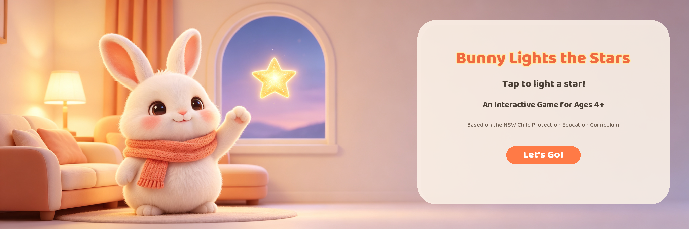
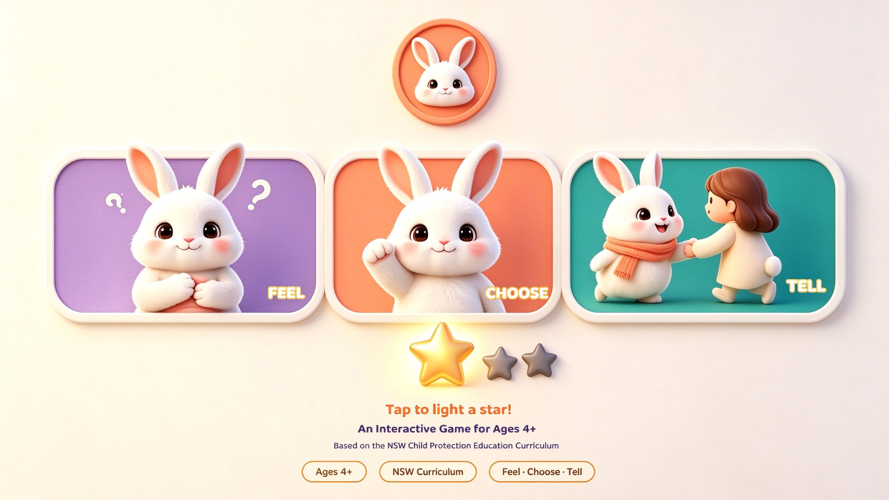

Interactive Story
Watch together, pause, and think about how Bunny could respond
For children aged 4+ with a trusted adult. Both choices lead towards support; finding it difficult to speak is never a child’s fault.

Let's Go!Watch together, pause, and think about how Bunny could respond
For children aged 4+ with a trusted adult. Both choices lead towards support; finding it difficult to speak is never a child’s fault.
Notice feelings, explore a response, and tell a trusted adult

Bunny notices an uncomfortable feeling, explores how to respond, and seeks help from a trusted adult. Use the three panels to talk about the story together.
An educational animation about child sexual abuse prevention and help-seeking for children aged 4+ and accompanying adults. Content draws on NSW Department of Education child protection education, presented through Bunny’s story.
Watch the complete linear version of Bunny’s story
Bunny Lights the Stars is a student multimedia project about child sexual abuse prevention and help-seeking, designed for children aged 4+ with a parent, carer or another trusted adult.
The story adapts educational directions from NSW Department of Education child protection education: recognising unsafe situations, responding to feelings and seeking help. The educational source is official; the animation and website are the student’s creative presentation.
For accompanying adults: Watch together and pause to discuss Bunny’s feelings. Children can seek help even if they freeze or cannot say “no”. Responsibility for protecting children belongs to adults.
Production combines a hand-built Blender lead character and editable animation, Tripo3D-assisted supporting characters, AI-assisted images, background music generated with Doubao (free version), narration and dialogue generated with Voicebox, and AI-assisted website code. Story selection, animation adjustments and editing were directed by the student.